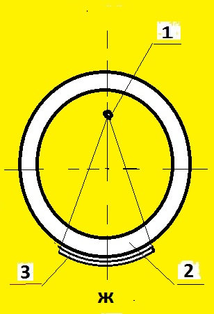
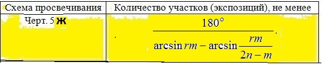

4.2а. При контроле кольцевых сварных соединений цилиндрических и сферических пустотелых изделий следует, как правило, использовать схемы просвечивания через одну стенку изделия (схемы черт. 5е, ж, з). При этом рекомендуется использовать схемы просвечивания с рас- положением источника излучения внутри контролируемого изделия: схему черт. 5ж - при 100%-ном и выборочном контроле, если исполь- зование схемы черт. 5е невозможно; схему черт. 5з - при выборочном контроле изделий диаметром 2 м и более. 4.4. При контроле стыковых сварных соединений по схемам черт. 5е, ж, з направление излучения должно совпадать с плоскостью контролируемого сварного соеди- нения. При контроле по этим схемам угловых сварных швов вварки труб, штуцеров и т.п. угол между направлением излучения и плоскостью сварного соединения не должен превышать 45°. Приложение 4. 5. Для схемы черт. 5ж определяют максимально возможное (исходя из внутреннего диа- метра контролируемого изделия и размеров радиационной или коллимирующей головки гамма-дефектоскопа или размеров излучателя рентгеновского аппарата) расстояние f (по диаметру изделия), которое должно удовлетворять соотношению f>=0.5C(1-m)D, где где С=2Ф/К при Ф/К >= 2 и С=4 при при Ф/К менее 2; s - радиационная толщина, мм; D - наружный диаметр контролируемого сварного сое- динения, мм; m - отношение внутреннего и наружного диаметров контролируемого сварного соединения; Ф - максимальный размер фокусного пятна источника излучения, мм; K - требуемая чувствительность контроля, мм. Если это соотношение не выполняется, необходимо использовать источник с меньшими раз- мерами фокусного пятна, для которого это соотношение выполняется. При выполнении этого соотношения определяют вспомогательный коэффициент r и выбирают количество N контролируемых за одну экспозицию участков, которое должно удовлетворять соотношению

Выберите класс чувствительности по ГОСТ 7512-82
класс чувствител. класс : Выбрать 1, 2 или 3
наружный диаметр D, мм : Выбрать D больше d
внутренний диаметр d, мм : Выбрать d меньше D
усиление шва h, мм : Выбрать от 0, но не более 5 мм
фокусное пятно Ф, мм : Выбрать более 0, но не более 5 мм
расстояние f, мм : Выбрать более d/2, но не более d мм